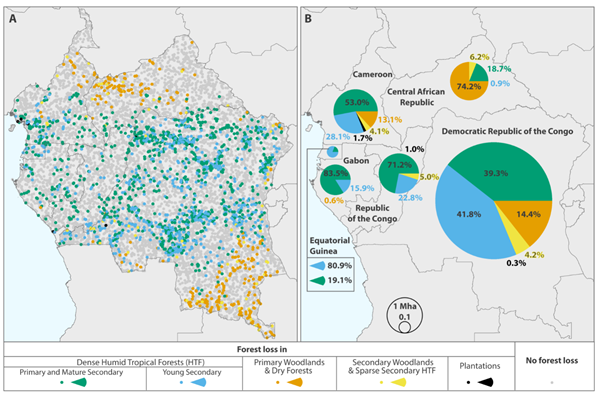

The rainforest has encountered a dramatic decrease in its biodiversity and habitat. Unsustainable and illegal logging (by both big and small companies) have been the main drivers of deforestation, destruction of wildlife habitat in the Congo rainforest over the last 30 years. For far too long, precious trees have been illegally removed for their wood, which is then shipped for furniture and flooring. Illegally obtained wood from the Congo Basin is currently being shipped all over the world, particularly to European Union member states, the United States, and, increasingly, China.
In addition to this, many species are also in the brink of extinction such as the okapi. The International Union for Conservation of Nature has officially classified the okapi as an endangered species. This is due to the fact that over the last 24 years, the rate of population loss has been reported to have surpassed 50%. Right now, its total population is estimated to be about 22,000. The findings from the University of Maryland revealed that the Congo Rainforest lost about 165,000 square kilometres of forest. A study also showed that the majority (60%) of Congo’s deforestation between 200 and 2014 took place in primary forests and woodlands, as well as mature secondary forests.
